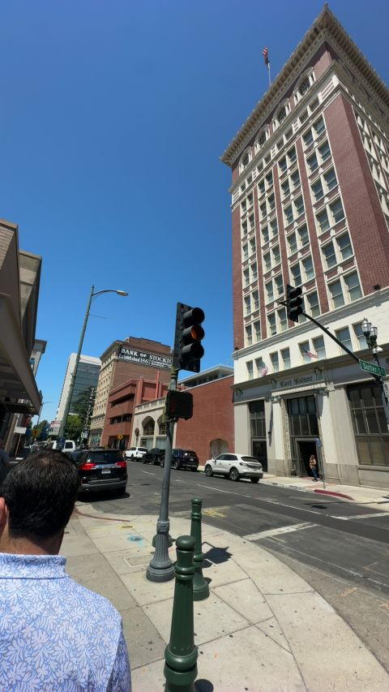
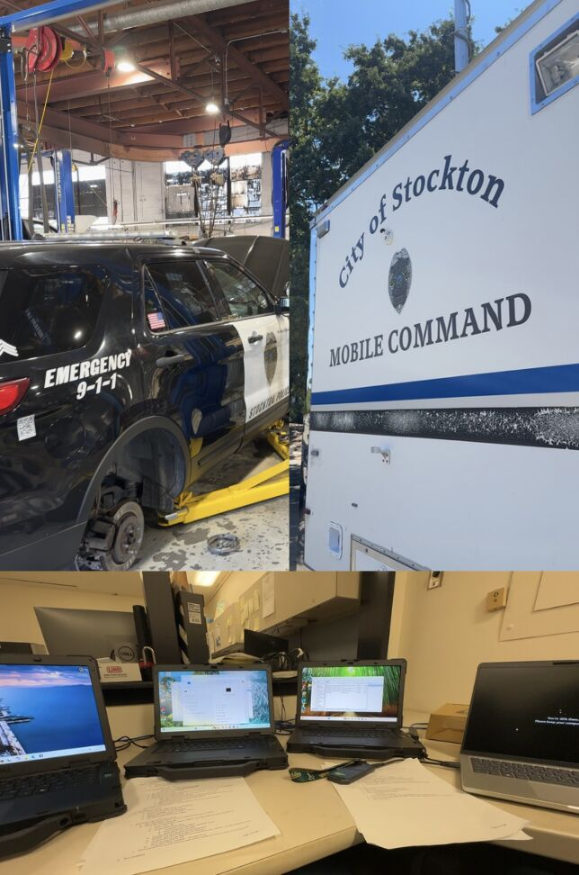
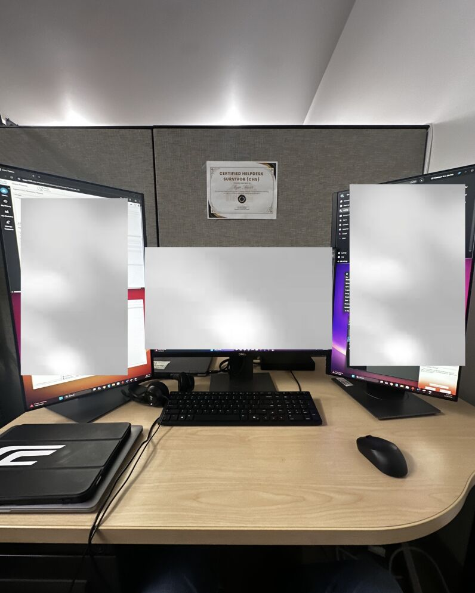
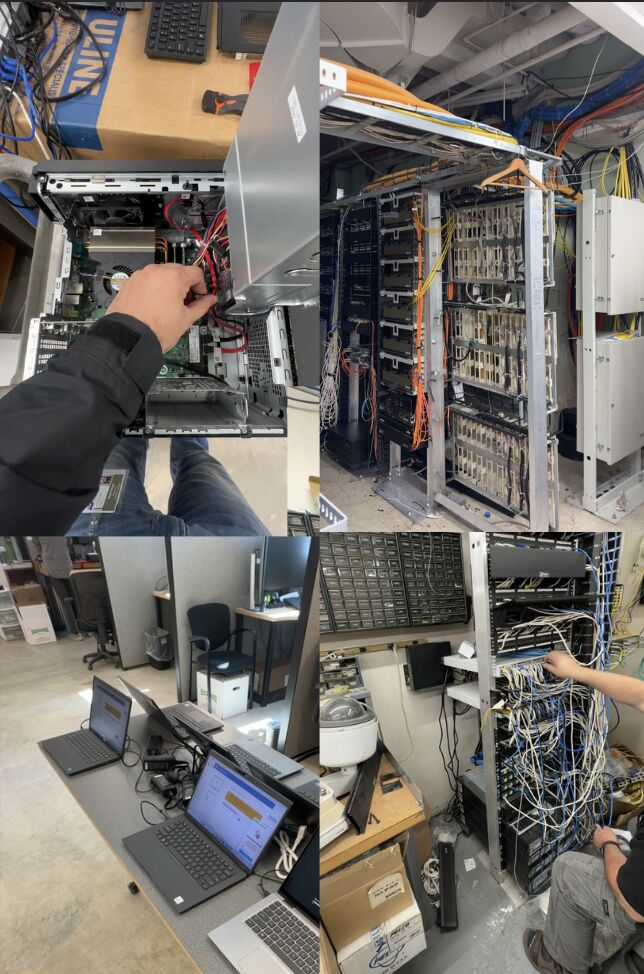
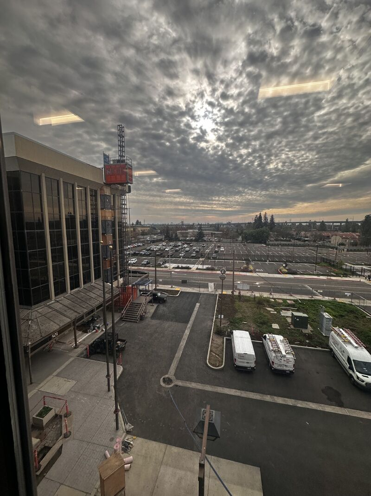

City IT Infrastructure Support
Maintaining and securing IT systems across City of Stockton departments as an IT Support Desk Intern.
Photos





Overview
As an IT Support Desk Intern at the City of Stockton (July 2025 – February 2026), I worked across multiple departments supporting the infrastructure that keeps city operations running day to day.
Key Responsibilities
- Imaged and deployed computers across city departments
- Installed and configured desktops, laptops, monitors, printers, and phones
- Coordinated with the network team to clear port security for devices
- Managed logs and monitored UEM/SIEM systems via Azure and Active Directory
- Performed secure hard drive wipes for disposal and reuse
- Resolved tickets and provided remote support via ServiceNow, Bomgar, and KACE
- Worked with partners including Palo Alto Networks, Telcion, and Quest Software
Tools & Platforms Used
- Azure Active Directory & Intune (UEM/SIEM monitoring)
- ServiceNow (ticketing), Bomgar (remote support), KACE (asset management)
- Cisco Finesse (VoIP), Palo Alto Networks (security)